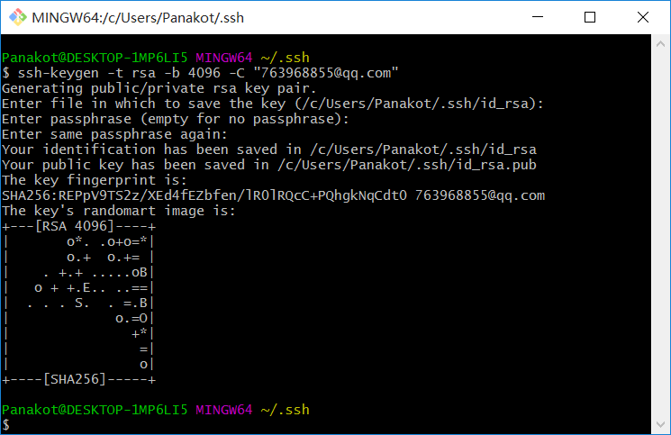

部署HEXO
一、 部署到GitHub
1. 准备工作
1）如果目前有意搭建自己的个人博客，而此前没有GitHub账号，点击此处前往GitHub官网注册一个GitHub账号。账号注册流程就不在此处展示操作了，请自行注册。
2）注册完成后，新建一个公开仓库，仓库名称格式为your_username.github.id。例如我的GitHub的仓库名为panakot,那么生成的仓库地址名称就是panakot.github.io。
3）创建完成后，建议用记事本记录仓库的HTTPS/SSH地址，后期设置_config.yml会用上。该仓库的HTTPS的一般格式为https://github.com/your_username/your_reponame.github.io.git;SSH的一般格式为git@github.com:your_username/your_reponame.github.io.git。
2. 安装部署插件
$ npm install hexo-deployer-git --save
$ npm install hexo-server --save 3. 配置Git
如果你只是安装好了 Git 但没有配置过你的 Git ，那么现在需要做的第一件事情就是设置你的 Git 用户名和邮箱。 在 Git Bash 中执行以下两条命令配置你的用户名和邮箱，这里建议用户名和邮箱与你的 GitHub 用户名和邮箱保持一致。
$ git config --global user.name "Your_user_name"
$ git config --global user.email Your_email@example.com 提醒
每次 Git 提交时都会附带这两条信息，用于记录是谁提交的更新，并且会随更新内容一起被记录到历史记录中。简单说，是用来标记的你的身份的
每次 Git 提交时都会附带这两条信息，用于记录是谁提交的更新，并且会随更新内容一起被记录到历史记录中。简单说，是用来标记的你的身份的
4. 配置站点_config.yml文件
用记事本或Sublime Text3、Visual Studio Code打开，拉到文末，找到deploy：。这里就会用到我建议使用记事本记录仓库的SSH地址，需要修改的配置参考如下：
deploy:
type: git # 类型填git
repo: <repository url> # 你的Github仓库地址
branch: master # 分支名称。默认填写 master 如果您使用的是 GitHub ，程序会尝试自动检测。
message: # 提交信息可以自定义，不填的则默认为提交时间 5.SSH连接GitHub
SSH是Secure Shell（安全外壳）的简称，是一种在不安全的网络环境中，通过加密机制和认证机制，实现安全的远程访问以及文件传输等业务的网络安全协议。SSH协议采用了典型的客户端/服务器模式，并基于TCP协议协商建立用于保护数据传输的会话通道。SSH协议有两个版本，SSH1.x和SSH2.0（本文简称SSH1和SSH2），两者互不兼容。SSH2在性能和安全性方面比SSH1有所提高。
使用 SSH 协议可以连接远程服务器和服务并向它们验证。 利用 SSH 密钥可以连接 GitHub，而无需在每次访问时提供用户名或密码。
1）检查现有SSH密钥
在生成 SSH 密钥之前，您可以检查是否有任何现有的 SSH 密钥。
Windows/Mac/Linux查询方式：
① Windows打开Git Base Here,Mac/Linux打开Terminal（终端）。
② 输入ls -al ~/.ssh以查看是否存在现有SSH密钥：
$ ls -al ~/.ssh
# 列出 .ssh 目录中的文件（如果有）③ 检查目录列表以查看是否已经有SSH公钥。默认情况下，公钥的文件名是以下之一：
★ id_rsa.pub
★ id_ecdsa.pub
★ id_ed25519.pub 如果您没有现有的公钥和私钥对，或者不希望使用任何可用于连接到GitHub的密钥对，那么请生成一个新的SSH密钥。
如果您看到要用于连接到GitHub的列出的现有公钥和私钥对（例如id_rsa.pub和id_rsa），则可以将SSH密钥添加到ssh-agent。
2）生成新SSH密钥
① Windows打开Git Base Here,Mac/Linux打开Terminal（终端）。
② 粘贴下面的文本（替换为您的 GitHub 电子邮件地址）。
$ ssh-keygen -t rsa -b 4096 -C "your_email@example.com" 这将创建以所提供的电子邮件地址为标签的新 SSH 密钥。
> Generating public/private rsa key pair. ③ 提示您“Enter a file in which to save the key（输入要保存密钥的文件）”时，按 Enter 键。 这将接受默认文件位置。
> Enter a file in which to save the key (/c/Users/you/.ssh/id_rsa):[Press enter] ④ 在提示时输入安全密码。 这样可以更安全的保护自己的密钥。
> Enter passphrase (empty for no passphrase): [Type a passphrase]
> Enter same passphrase again: [Type passphrase again] 
3）将SSH密钥添加到GitHub账户
① 找到 ~/.ssh目录下的id_rsa.pub，将SSH公钥钥复制到剪贴板。或通过Git Base Here使用 cd ~/.ssh 进入.ssh目录，然后使用 ll 查询当前文件夹下的文件，然后使用 clip < ~/.ssh/id_rsa.pub 复制 ~/.ssh/id_rsa.pub文件中的公钥信息。
② 登录GitHub，在页面的右上角，单击您的个人资料照片，然后单击 Settings（设置）。
在用户设置侧边栏中，单击 SSH and GPG keys（SSH 和 GPG 密钥）。
单击 New SSH key（新 SSH 密钥）或 Add SSH key（添加 SSH 密钥）。
在 “Title”（标题）字段中，为新密钥添加描述性标签。将密钥粘贴到 “Key”（密钥）字段。最后单击 Add SSH key（添加 SSH 密钥）。
如有提示，请确认您的 GitHub 密码。
4）测试SSH连接
以上操作完成后，测试连接时，您将需要使用密码（即您之前创建的 SSH 密钥密码）验证此操作。
打开Git Base Here，输入以下内容：
$ ssh -T git@github.com //对GitHub尝试ssh 您可能会看到类似如下的警告：
> The authenticity of host 'github.com (IP ADDRESS)' can't be established.
> RSA key fingerprint is 16:27:ac:a5:76:28:2d:36:63:1b:56:4d:eb:df:a6:48.
> Are you sure you want to continue connecting (yes/no)?或类似如下：
> The authenticity of host 'github.com (IP ADDRESS)' can't be established.
> RSA key fingerprint is SHA256:nThbg6kXUpJWGl7E1IGOCspRomTxdCARLviKw6E5SY8.
> Are you sure you want to continue connecting (yes/no)? 验证您看到的消息中的指纹匹配步骤 2 中的消息之一，然后输入 yes：
> Hi username! You've successfully authenticated, but GitHub does not provide shell access.
6. 发布到GitHub
在本地的 Hexo 站点根目录下，执行如下命令即可部署到 GitHub Pages 上。
$ hexo clean && hexo d -g 提醒
如果是第一次使用，会弹出一个登录框，需要登录你的 GitHub 账号。
7. 配置个性化域名和域名解析
1) 如果你拥有个人域名，请用 A 记录解析到以下 IP 中的任意一个。如果使用 CNAME 请解析到你的 GitHub 仓库名称。
185.199.108.153
185.199.109.153
185.199.110.153
185.199.111.153 以上地址是通过域名解析你的仓库地址your_username.github.io得到的IP地址；用于解析您上传到GitHub网站的GitHub Pages。
云服务器（阿里云、腾讯云、百度云等）设置域名解析参考如下表格。
| 记录类型 | 主机记录 | 解析路线 | 记录值 | Max优先级 | TTL（秒） |
|---|---|---|---|---|---|
| A | @ | 默认 | 185.199.111.153 | - | 600 |
| CNAME | @ | 默认 | GitHub仓库地址（如我的：panakot.github.io) | - | 600 |
2) 打开仓库，点击设置，找到GitHub Pages项目，修改Custom domain选项的值为您自定义的域名（注意此处不需要填写http/https://等前缀）。
3）勾选Custom domain选项下的Enforce HTTPS选项，强制开启https。如果遇到Enforce HTTPS选项无法打开，可以稍等一会再尝试。
提醒
同时需要在本地的 source 目录新建一个 CNAME 文件，内容为你的自定义域名（不用带http | https://等前缀）。否则无法使用自定义域名功能（ hexo d 生成的文件没有 CNAME 文件，导致仓库的自定域名设置失效）。
如果出现以下错误提示，请参照上面的提醒操作，在本地source目录新建一个CNAME的文件，注意没有任何后缀格式，然后用记事本打开，输入您的个性化域名，如www.baihu.com或baihu.com。最后使用`hexo d`重新将本地的博客文件上传到GitHub Pages。

到这里，您的网站就部署完成了，后期就可以开始写文章、修改主题、优化网站等操作了。下面的文章将如何教会您完成上面的操作。让我们继续学习吧。